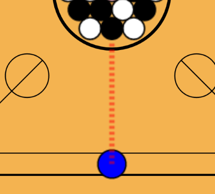
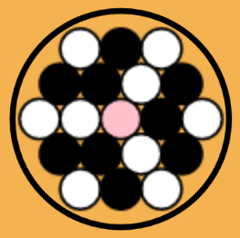
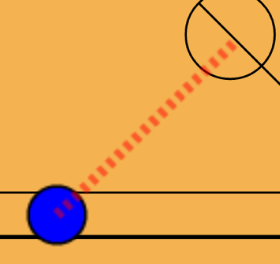

×
{{ 'CARROM_RULES_TITLE' | translate }}
{{ 'CARROM_RULES_SLIDE1' | translate }}

{{ 'CARROM_RULES_SLIDE2' | translate }}

{{ 'CARROM_RULES_SLIDE3' | translate }}

P1 : {{ game.gameScore.player1 }} - P2 : {{ game.gameScore.player2 }}
replay
replay
play_arrow
play_arrow
navigation
navigation
play_arrow
play_arrow
replay
replay